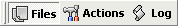

"Options" button opens the options window.
"Options" button opens the options window.The main window of Ant Renamer is divided in three pages:
These pages can be accessed through the "Tabs" toolbar which looks like this:

Once you defined the files to rename and how to rename them, click the "Go" button. The log indicates you what happened to each file.
The "Undo" button reverts to the old names. It only has one level of undo, so you can only undo the last change that has been made.
The "Always on top" button, when checked, allows to keep the window always on top of other windows when it is not active.
The "Options" button opens the options window.